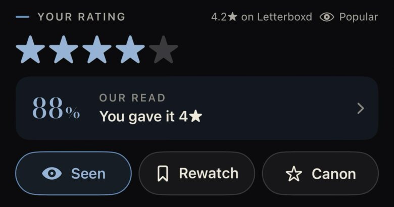
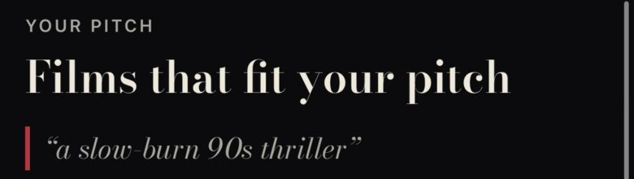
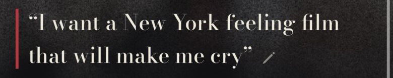
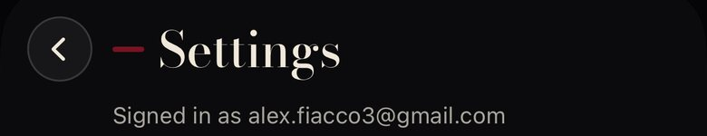
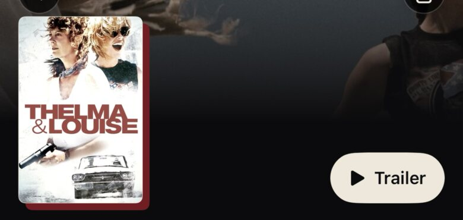

Four colours carry meaning: the bright red, oxblood, the blues and cream. Today they leak into each other's jobs. Each place below is shown now and proposed, then a one-page usage sheet the code can be linted against. Montage origin/main 938282d3.
Where the bright red --red / Theme.red is used | Code | Proposed |
|---|---|---|
| Admit One / Admit 2 / ADMIT ALL / the "Admit one" stamp | WidgetViews:88, MovieNightViews:100, RoomName:27, TonightSheet:982, .mnr-rn-admit 13766 | Keep. This is the red's only job. |
| Canon star, "★ YOUR CANON", "01 · YOUR NO. 1" | globals 10510, 10927; ProfileCanon:201, 215, 312, 391 | Cream star; the label is a plain caps label |
| Pitch mic while listening | globals 13288; Recut:1416 | Cream "on air" disc |
| Pitch quote and pin bars, the walkthrough's "said" bar | globals 13414, 13562, 13600, 11560; Recut:2263, 2656; WelcomeTour:452 | --shadow bar (option A) |
| Unread dots, the bell's count, the live dot | SocialScreen:351, MovieNightViews:141, 316; ActivityDrawer:720 | --accent-2, as on the web |
| Caveat label, chart "low" bar | globals 3604, 5731 | --warn text; --line-2 bar |
| Canon button "on" (oxblood fill) | .fa-canon.on 2357; CanonButtonStyle FilmScreen:1756 | The one chosen state (option A) |
Seen turns on in the chosen blue. Canon turns on as a solid oxblood capsule, which breaks "oxblood is a shadow, never a fill" and makes Canon the heaviest object on the film page. On the web, the off star is the bright red.

Two different "on" states side by side: blue tint for Seen, a solid oxblood fill for Canon. Note the blue dash in front of "YOUR RATING": one of the eight section marks.
Canon on looks exactly like Seen on: --select-fill, the 1.5px edge, cream words. The star fills in cream. What makes it Canon is the filled star and the word, not a colour. The "YOUR RATING" dash goes: a section is a plain caps label.
Canon on gets a cream edge and the 4px oxblood offset under it: oxblood stays a shadow, and Canon still feels like an honour. But it puts a second hero shadow on a page whose poster already has one, and adds a third "on" look.
Pitch's quote is marked with a 3px bar in the bright red, and the mic glows red while it listens. Elsewhere the same quote bar is oxblood (the archetype head). Red here also reads as "recording" or "error".


A bright-red bar and a bright-red mic: two jobs for the colour that is meant only for Admit One.
The quote bar is --shadow, the same mark as the archetype's pull quote. The mic, while listening, is a cream disc with two soft cream rings and a level meter: on air, not alarm.
No bar at all: a Bodoni open-quote hangs in the margin in --faint. One fewer mark on the screen, but it differs from the archetype's quote, so it is two quote styles again unless both change.
Today a section can be marked eight ways: a blue dash before caps, a plain caps eyebrow, the red/blue tick, a red dash before the title, the oxblood spine, the red quote bar, the oxblood bar and the three-colour bar. Proposed: the tick on page and drawer titles, a plain caps label on sections, the spine only on the archetype hero.

A red dash before the Settings title; blue dashes before every section on the film page.
Two marks in the whole app: the tick (24×3, tick-red then select) under a page or drawer title, and a plain caps label for a section. The oxblood spine stays on the archetype card only, where it is the brand.
The oxblood offset comes in eight sizes on the web (4px ×12, 6px ×11, 5px ×6, 8, 3, 2, 12, 7) and five on the iPhone (6 ×7, 5 ×5, 2 ×4, 4 ×3, 6/9). The film page's hero moved from 6 to 5 yesterday (rule 1283). The token still says 6.

Same idea, four weights. The 44px tile's 8 is heavier than the hero's 5.
One size, 5px, and one per screen: the hero poster, the ticket or the deck card. --shadow-offset and Theme.shadowOffset become 5, matching rule 1283. Smaller posters carry no offset, so the hero is the hero.
One rule instead of one number: the offset is 4% of the poster's width, rounded. It is consistent, but every poster in a row gets a shadow, and the oxblood stops marking "the one".
One page: what each colour means, where it may go, and where it may not. CI greps for the "never" column.
"You're in." A seat at the screening.
"The one." The object this screen is about.
"Yours, and how much." Data about you, and what you chose.
--accent-2): match %, Blend %, your stars, links, unread dots--select): chips on, Seen and Canon on, the switch track, tab underline, ticks"Paper under a projector." Type, and the one thing to press.
#fff, or more than one cream button per view.--tick-red exists only inside it.--warn).--accent-2 on the iPhone, as on the web. Yes or no.--red outside the Admit classes, --shadow as a background, and Theme.red outside the ticket views fail CI. Yes or no.